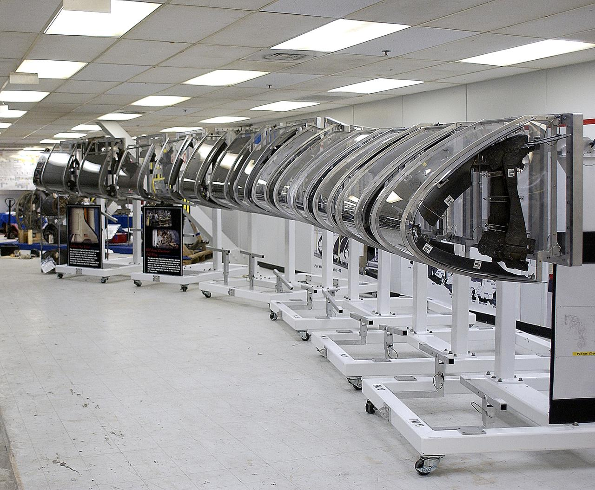

ENG0018 Computer Laboratory 2026/27
Student URN: 6980185
Conference Paper: The Reusability Paradox: Why Surviving Hypersonic Flight Is Not Enough
1. Abstract
Hypersonic flight represents a major leap forward for aerospace, offering unprecedented speeds that could transform global travel, logistics, and access to space. However, the engineering required to sustain these speeds remains out of reach for most nations, and the few leading the field closely guard their breakthroughs. At the centre of this race is a fundamental engineering paradox: how do you build a vehicle that can survive superheated gas at temperatures approaching 3,000 °C and fly again almost immediately?
This paper uses a literature-based comparative analysis to examine how emerging hypersonic technologies apply to next-generation reusable spacecraft, including SpaceX Starship, Sierra Space Dream Chaser, and future advanced wingless "lifting-body" designs. It argues that simply surviving the extreme heat of re-entry is no longer enough to make spaceflight practical, because a vehicle must also be quick to inspect and repair. Solving this reusability paradox appears realistic within the coming decades with the advancement of technology, but achieving rapid, airline-style turnaround will require major breakthroughs in heat-resistant materials and maintenance logistics.
2. Introduction & Background
2.1 Defining the Reusability Paradox
The "Space Race" was a pivotal moment in the history of aerospace, locking both the United States and the USSR in a fierce competition to reach the Moon first. When the uncrewed Apollo 4 capsule returned from its 1967 test flight at lunar-return speed, its heat shield reached about 5,000 °F (roughly 2,760 °C) and was left visibly charred, having worn away as designed (Manned Spacecraft Center, 1968). That ablative shield was deliberately sacrificial, which was acceptable to a determined government in the 1960s trying to win a race, but throwing away a heat shield after every single flight is unsustainable in an era transitioning toward commercial spaceflight and space tourism (Glass and Camarda, 2001; Garwood and Bowles, 2012). Yet when NASA later introduced reusable ceramic tiles on the Space Shuttle to avoid rebuilding the shield after each flight, technicians still had to carry out extensive inspection and repair work on thousands of fragile tiles between flights (Curry and Synofzik, 1983; Heppenheimer, 2002). The cost of an undetected fault became clear in 2003, when a piece of insulating foam broke off Columbia's external tank during launch and damaged a reinforced carbon-carbon (RCC) panel on the leading edge of the left wing. During re-entry, superheated air entered through the breach and progressively melted the wing's aluminium structure until the orbiter broke apart, killing all seven crew (Columbia Accident Investigation Board, 2003). RCC panels like these, represented by the mockup in Figure 1, protect the hottest parts of the wing. Columbia shows that a reusable vehicle can only be trusted if its heat shield can be thoroughly checked after every flight. This is the core of the reusability paradox: surviving the extreme heat of hypersonic flight is no longer the hardest part. Doing so while staying quick to inspect, repair and fly again is.

2.2 Why Hypersonic Flight Is So Hot
Speed in flight is often measured by the Mach number, which compares a vehicle's speed with the speed of sound (Mach 1, roughly 1,200 km/h at sea level). "Hypersonic" usually means faster than Mach 5 (Anderson, 2019). At these speeds the air cannot flow smoothly out of the way. It piles up in front of the vehicle as a shock wave, and compressing air this violently heats it enormously. Most of the heating of a re-entering vehicle comes from this squeezing of the air rather than from friction (Anderson, 2019; Hayes and Probstein, 1959).
A simple formula shows how fast the temperature at the nose rises with speed:
Here T0 is the air temperature at the nose, T∞ is the temperature of the surrounding air, M is the Mach number and γ is a constant that is about 1.4 for air (Anderson, 2019). For air at about 217 K (−56 °C), a typical temperature high in the atmosphere, Mach 5 gives about 1,300 K (roughly 1,000 °C), and Mach 10 gives about 4,600 K. Figure 2 plots this relationship. Real temperatures at the highest speeds are lower than this formula suggests, because the energy starts splitting oxygen and nitrogen molecules into single atoms, and at extreme speeds knocks electrons off atoms to create a glowing, electrically charged gas called a plasma (Vincenti and Kruger, 1965; Bertin, 1994).
Heat reaches the vehicle's surface in two main ways. The first is direct contact with the very hot gas flowing over it. The second is chemical: when the split atoms touch the cooler surface and recombine into molecules, they release the energy stored in them as extra heat, which is why the surface material can change the heating a vehicle experiences (Fay and Riddell, 1958; Kemp, Rose and Detra, 1959). At very high speeds, such as a return from the Moon, the glowing gas also radiates heat onto the vehicle (Anderson, 2019). The heating is worst at the point where the air hits head-on, usually the nose, and a widely used equation estimates it:
In this equation qs is the heat arriving per unit area at the nose, ρ∞ is the density of the surrounding air, Rn is the radius of the nose, V∞ is the vehicle's speed and k is a constant that depends on the gas (Sutton and Graves, 1971). The speed is cubed, so doubling the speed raises the heating about eightfold. The nose radius is under a square root, so a more rounded nose spreads the heat out and reduces it: making the nose four times as rounded halves the heating.
Re-entry and sustained hypersonic flight also differ in how long the heat lasts. A capsule falling back to Earth endures an intense burst lasting minutes. A winged vehicle that glides home, such as the Space Shuttle, is heated for far longer, with its entry lasting roughly half an hour (Columbia Accident Investigation Board, 2003), and a hypersonic cruise vehicle could be heated for longer still. For these vehicles, the total heat absorbed and the gradual damage to the surface from reacting with oxygen matter as much as the peak temperature (Hankey, 1988; Bertin, 1994).
2.3 Scope of Paper
This paper asks a simple question: if a spacecraft can survive the heat of re-entry or hypersonic flight, can it also be turned around quickly enough to fly like an airliner? To answer it, the paper reviews published technical sources and compares vehicles, rather than running new experiments. It looks at three things. First, how well different heat-shield materials resist wear and damage, from the Space Shuttle's silica tiles and reinforced carbon-carbon (Scotti, Clay and Rezin, 2003) to newer materials such as TUFROC (NASA Ames Research Center, 2019) and ultra-high temperature ceramics (Fahrenholtz and Hilmas, 2017). Second, what inspection and maintenance work keeps vehicles on the ground, mainly using Shuttle experience (Scotti, Clay and Rezin, 2003; NASA Kennedy Space Center, 2004). Third, how the Space Shuttle, SpaceX's Starship (Lapointe, 2026), Sierra Space's Dream Chaser (NASA Ames Research Center, 2019) and future hypersonic glide vehicles compare. Re-entry vehicles and hypersonic gliders are discussed together because both face extreme heating and the same reuse problem, although they are exposed to the heat for different lengths of time. Section 3 analyses these questions, Section 4 presents supporting data, and Section 5 concludes that rapid, airline-style turnaround depends on advances in materials and maintenance as much as on surviving the heat.
3. Analysis and Discussion
3.1 Thermal Protection System (TPS) Trade-offs
A thermal protection system (TPS) is the heat shield that stops a vehicle's structure from melting or weakening. No design is best at everything, so engineers trade between how hot a material can get, how much it weighs, how easily it is damaged and how much work it needs between flights. Table 1 compares the main approaches.
Ablative shields, like the one on Apollo 4, protect the vehicle by charring and wearing away (Manned Spacecraft Center, 1968). They work well, but a shield that is consumed cannot easily be reused. The Space Shuttle instead used silica tiles and blankets over most of its surface, with the blankets limited to about 650 °C (1,200 °F) and the tiles damaged fairly easily (Scotti, Clay and Rezin, 2003). Its hottest areas, the nose and wing leading edges, used reinforced carbon-carbon (RCC), which can withstand surface temperatures of about 1,650 °C (3,000 °F) but conducts heat, so it needs insulation behind it (NASA Kennedy Space Center, 2004).
Newer options try to be tougher or easier to maintain. Metallic panels are more damage tolerant and avoid re-waterproofing, and the cancelled X-33 programme aimed to cut inspection and maintenance by a factor of ten compared with the Shuttle (Scotti, Clay and Rezin, 2003). TUFROC, a carbon-based cap on a silica-based insulating base, flew on the wing leading edge of the X-37B and can be reused at about 1,600 °C (2,900 °F). NASA licensed it to Sierra Nevada Corporation for Dream Chaser (NASA Ames Research Center, 2019). Ultra-high temperature ceramics have the highest melting points of any known materials (Fahrenholtz and Hilmas, 2017), but they are brittle and hard to manufacture, and are still being developed (Wyatt et al., 2024). The trade-off is consistent: the more heat a material survives, the less proven or more fragile it tends to be.
3.2 Turnaround Time vs. Inspection and Damage
Surviving the heat is only half the story, because between flights a reusable heat shield must be inspected, repaired and, for the Shuttle's tiles, re-waterproofed. One study quoted by NASA engineers put the heat-shield maintenance alone at nearly 32,000 hours per mission, which they judged impossible for a commercial vehicle. Waterproofing meant injecting compound into every tile and blanket with syringes (Scotti, Clay and Rezin, 2003). Heating, cooling, weather and handling also erode surfaces and cause impact damage, so a heat shield that survived one flight is not automatically ready for the next (Scotti, Clay and Rezin, 2003).
Columbia made inspection a safety matter. Before each mission the RCC panels were inspected three times (NASA Kennedy Space Center, 2004), and afterwards NASA adopted infrared thermography, which uses a thermal camera to reveal hidden damage, as the first inspection step for these panels (NASA Langley Research Center, no date). This is an example of non-destructive evaluation (NDE), meaning inspection that does not damage the part. Starship faces the same issue with about 18,000 hexagonal ceramic tiles. In 2026 two tiles from a recovered ship were flown again, its first tile reuse (Lapointe, 2026), but former NASA experts argue that a tile-based shield remains too inspection-heavy for rapid turnaround (Tech Times, 2026). By contrast, metal "hot structures" can be inspected readily and may offer more airline-like operations (Scotti, Clay and Rezin, 2003).
Table 1: Comparison of Reusable Re-entry and Hypersonic Heat-Shield Approaches
| Vehicle / System | Primary TPS Material | Temperature Capability | Turnaround Bottleneck |
|---|---|---|---|
| Space Shuttle Orbiter | Silica tiles and blankets; RCC on nose and wing leading edges | Up to about 1,650 °C (3,000 °F) on the hottest surfaces (NASA Kennedy Space Center, 2004) | Inspecting and waterproofing thousands of tiles; about 32,000 maintenance hours per mission (Scotti, Clay and Rezin, 2003) |
| SpaceX Starship | About 18,000 hexagonal ceramic tiles over a stainless-steel hull (Tech Times, 2026) | Not confirmed in public sources | Tile inspection and hot gas leaking through gaps; first tile reuse in 2026 (Lapointe, 2026) |
| Dream Chaser | TUFROC (carbon-based cap on silica insulating base), licensed from NASA | Reusable to about 1,600 °C (2,900 °F) (NASA Ames Research Center, 2019) | Little public turnaround data |
| Future hypersonic glide vehicles (concept) | Ultra-high temperature ceramics (UHTCs) | Highest known melting points; usable limits still being tested (Fahrenholtz and Hilmas, 2017) | Brittleness and difficult manufacture (Wyatt et al., 2024) |
4. Data Visualisations
Figure 2 shows how the temperature of air at a vehicle's nose rises with Mach number, calculated from the equation in Section 2.2.
Figure 2: Mach Number vs. Ideal-Gas Stagnation Temperature
Calculated with the equation in Section 2.2, assuming air at 216.65 K and γ = 1.4 (Anderson, 2019). Real values at high Mach numbers are lower because energy goes into splitting air molecules.
5. Conclusion
[Insert conclusion: restate that surviving the heat is necessary but not sufficient, summarise the thermal protection and turnaround findings from Section 3, state whether airline-style turnaround is realistic and over what timescale, and note limitations and future work.]
6. References
- Anderson, J.D. (2019) Hypersonic and high-temperature gas dynamics. 3rd edn. Reston, VA: AIAA Education Series.
- Bertin, J.J. (1994) Hypersonic aerothermodynamics. Washington, DC: AIAA Education Series.
- Columbia Accident Investigation Board (2003) Report Volume I. Washington, DC: National Aeronautics and Space Administration and the Government Printing Office.
- Curry, D.M. and Synofzik, C.K. (1983) 'Shuttle Orbiter thermal protection system—A material and structural overview', Journal of Spacecraft and Rockets, 20(1), pp. 25–31.
- Fahrenholtz, W.G. and Hilmas, G.E. (2017) 'Ultra-high temperature ceramics: Materials for extreme environments', Scripta Materialia, 129, pp. 94–99.
- Fay, J.A. and Riddell, F.R. (1958) 'Theory of stagnation point heat transfer in dissociated air', Journal of the Aeronautical Sciences, 25(2), pp. 73–85.
- Garwood, R. and Bowles, J.V. (2012) 'Systems analysis of reusable launch vehicles operating in the hypersonic regime', 50th AIAA Aerospace Sciences Meeting, Nashville, TN, 9–12 January. Reston, VA: AIAA, Paper 2012-1120.
- Glass, D.E. and Camarda, C.J. (2001) Advanced metallic and ceramic thermal protection systems for reusable launch vehicles. NASA Technical Memorandum NASA/TM-2001-211039. Hampton, VA: NASA Langley Research Center.
- Hankey, W.L. (1988) Re-entry aerodynamics. Washington, DC: AIAA Education Series.
- Hayes, W.D. and Probstein, R.F. (1959) Hypersonic flow theory. New York: Academic Press.
- Heppenheimer, T.A. (2002) The Space Shuttle decision: NASA's search for a reusable space vehicle. Washington, DC: NASA History Division.
- Kemp, N.H., Rose, P.H. and Detra, R.W. (1959) 'Laminar heat transfer around blunt bodies in dissociated air', Journal of the Aero/Space Sciences, 26(7), pp. 421–430.
- Lapointe, E. (2026) 'Starship is about to attempt something it's never done in 13 flights', Gizmodo, 24 September. Available at: https://gizmodo.com/starship-is-about-to-attempt-something-its-never-done-in-13-flights-2000816743 (Accessed: [insert date]).
- Manned Spacecraft Center (1968) Apollo 4 mission report. MSC-PA-R-68-1. Houston, TX: NASA Manned Spacecraft Center.
- NASA (2003) Columbia Debris, NASA Image KSC-03pd2767. Kennedy Space Center, FL: NASA. Available at: https://images.nasa.gov/details/KSC-03pd2767 (Accessed: [insert date]).
- NASA Ames Research Center (2019) TUFROC thermal protection system. NASA Technical Reports Server, ID 20190030273. Moffett Field, CA: NASA.
- NASA Kennedy Space Center (2004) Reinforced carbon-carbon (RCC) panels. Fact Sheet FS-2004-01-001-KSC. Kennedy Space Center, FL: NASA.
- NASA Langley Research Center (no date) Infrared thermography. Available at: https://www.nasa.gov/langley/nesb/infrared-thermography-nesb (Accessed: [insert date]).
- Scotti, S.J., Clay, C. and Rezin, M. (2003) 'Structures and materials technologies for extreme environments applied to reusable launch vehicles', AIAA/ICAS International Symposium and Exposition, Dayton, OH, 14–17 July. Reston, VA: AIAA, Paper 2003-2697.
- Sutton, K. and Graves, R.A. (1971) A general stagnation-point convective-heating equation for arbitrary gas mixtures. NASA Technical Report NASA-TR-R-376. Washington, DC: NASA.
- Tech Times (2026) 'Starship heat shield tiles are dead end for rapid reuse, former NASA experts warn', Tech Times, 29 July. Available at: https://www.techtimes.com/articles/322079/20260729/starship-heat-shield-tiles-are-dead-end-rapid-reuse-former-nasa-experts-warn.htm (Accessed: [insert date]).
- Vincenti, W.G. and Kruger, C.H. (1965) Introduction to physical gas dynamics. New York: John Wiley & Sons.
- Wyatt, B.C. et al. (2024) 'Ultra-high temperature ceramics for extreme environments', Nature Reviews Materials.